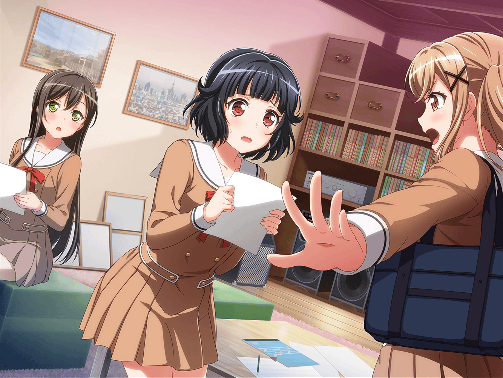

数日後
川沿いの道
香澄
はぁ～、やっと授業終わった。
なんか今日はすっごい疲れちゃったなー
りみ
香澄ちゃん、昨日は夜遅かったもんね。
あんな時間にチャットがきたから、驚いちゃったよ。
……コホン
香澄
昨日はごめんね、りみりん。
新曲の歌詞がどうしても浮かばなくってさー。
寝ちゃってるかもって思ったんだけど、連絡しちゃった
りみ
ううん、平気だよ。
私もなかなか曲のイメージが固まらなくて悩んでたから、
香澄ちゃんとチャットできてよかったよ
りみ
といっても、まだ固まってないんだけど……
コホ、コホ……っ
たえ
りみ……咳、大丈夫？
りみ
う、うん……
ちょっとだけ風邪引いちゃったみたいで――
コホン……っ
沙綾
２人ともっ。あんまりムリしちゃダメだよ。
テスト勉強して、ライブの準備してって……
それだけでもすっごい大変なんだから
りみ
けど、曲ができてないと、練習できないから。
これから蔵で練習なのに……みんなごめんね
香澄
そんな謝らなくてもいいって！
今、できてる部分を合わせてみようよ。
……確か、有咲はちょっと遅れて来るんだよね？
たえ
有咲、教室に残ってなんかやってたよ。
先に練習始めててくれ、だって
香澄
そっか……
あ、そういえば、おたえ！
ライブできる場所は見つかりそう？
たえ
まだ見つかってはいないけど、いろんな人に連絡してみてる
香澄
あ、そうだ！ それ有咲にも手伝ってもらうっていうのは？
さーやはお店の手伝いがあるもんね！
あとで有咲に聞いてみようよ
沙綾
まあ、とにかく！
みんなムリだけは禁物だよ。
身体を壊しちゃったら元も子もないんだから

市ヶ谷家 蔵
香澄
さーや～、ちょっと相談に乗ってほしいんだけど……
ここのサビの歌詞が出てこなくて……
どうしたらいいと思う～？
沙綾
それって、昨日の夜ずっと悩んでた、って言ってたところ？
香澄
そうそう。
イメージとしてはここに、私達が
キラキラドキドキするものを入れたいなーって思ってて……
沙綾
キラキラドキドキするものね～。
それは確かに難しいな。ちょっと私も考えてみるね
香澄
ありがとー！
あ、おたえも一緒に考えて、お願い！
たえ
うん、いいよ。
キラキラドキドキするものを考えればいいのね？
りみ
ねぇ、沙綾ちゃん……コホっ……
悪いんだけど、私の相談にも乗ってくれる？
沙綾
うん、いいけど……
りみりん、本当に大丈夫？ かなり具合悪そうだよ？
今日は早めに帰ったほうがいいんじゃない？
りみ
ううん、みんな頑張ってるんだもん、私だけ帰れないよ。
それに私はサビどころか、Bメロがまだ固まってないから。
せめてみんなが通して練習できるぐらいにはしないと……
りみ
えっと、今、２つメロディが浮かんでて、
上に書いてあるメロディだとね――
香澄
ねぇ、りみりん。
そんなに焦らないでいいって。
りみりんが本当に納得したものにしないと意味ないよ
りみ
そうなんだけど……
さっき学校で香澄ちゃんとおたえちゃんには意見聞いたでしょ？
りみ
あとは沙綾ちゃんと有咲ちゃんの
意見をもらいたいなって思ってるんだ……コホッ
沙綾
私は……どっちかって言うと、下のほうが好きかも
りみ
やっぱり！ 私もそう思ってたんだ。
そしたらあとは有咲ちゃんに意見もらえば……
たえ
……あ、有咲来た
有咲
…………お待たせ。
ふぅ……つっかれたぁ……
香澄
もー、有咲ぁ～、遅いよー！
今まで何やってたの～！？
有咲
！！
……ふぅ～……ごめん。
ちょっと用事があって
有咲
（てか、ホントは１人で自習してたんだけど……
そんなこと言えねーよな……）
香澄
あのさ、有咲。
今、おたえがライブできる場所を探してくれてるんだけど、
なかなか見つからないんだって！
香澄
よかったら有咲も手伝ってあげてくれないかな？
有咲、放課後時間あるよね？
有咲
はぁ！？
私だって時間ねーって！
やることたくさんあるんだよ！
香澄
そっかー。
……あ、あとね！
私の相談にも乗ってほしいんだけど、ここの歌詞がね――
有咲
てか、耳元で声がでかいっつーの。
頭に響くんだって！
香澄
わっ、ごめんねー、有咲～。
そんなに怒んないでよ～
有咲
歌詞は香澄に任せるよ！
私の意見なんて別に気にしないでいいから！
香澄
そんなこと言わないで、協力してくれたっていいじゃーん

りみ
あ、あの有咲ちゃん、私もちょっと相談があるんだ。
Bメロなんだけど、２つの案で迷ってて……
有咲
……はあ。別に、どっちでもいいっつーの。
曲作ってるのはりみなんだろ？ 任せるって。
……てか、これ以上余計なもん抱えさせるなよ！
りみ
！？
りみ
………………
………………ご、ごめんね……有咲ちゃん……っ
沙綾
あ、りみりん！？
ちょっと待って！
有咲
…………あ
香澄
有咲！ 今のはひどいよ……
りみりん、具合悪いのに頑張ってくれてるんだよ！
今の言い方はよくないよ！
有咲
…………私だって――
沙綾
あ、ダメ……
りみりん、帰っちゃったみたい……
私、りみりんの荷物持っていくね
香澄
さーや、ありがと！
香澄
ねえ、有咲！
今日の有咲、なんかヘンだよ？
ずっと怒ってるみたいな態度でさ
有咲
……う、うるせーな！
お前に私の何がわかるんだよ！？
つーか今日は練習やめだ！ みんな出ていけよ！
有咲
早く出て行けってっ！！
香澄
有咲！？ 何言って……
たえ
……香澄、行こう
香澄
でも！
たえ
いいから……荷物持って
有咲
……はぁ……ったく、なんなんだよ……！
私だって、キツイんだっての！
そんなこともしらねーで、好き勝手言いやがって……
有咲
……ふざけんなよっ！
有咲
……ふざけんなって……
有咲
…………
有咲
あぁ……もぉ、やだ……
……ホント……最低……っ
……何やってんだ、私……
有咲
……りみ……ごめん……
…………うう……っ
有咲
……うぅ……っ